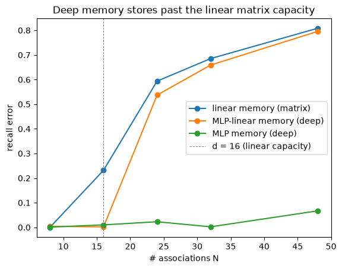

The question: what if the hidden state is itself a model, trained at inference?
First module of the Nested Learning track. Prerequisites: foundations M1–M7. Runs on CPU in seconds; PyTorch throughout.
M7 left the write rule as a formula: hand it a key and a value, and it produces the vector that goes into the memory. Four papers break the formula open by making the write gradient descent on a loss — and once it is, the memory can be a whole model and the write can be a whole optimizer:
TTT (Sun et al., July 2024) — the hidden state is a model \(f_W\); the write is a GD step on a self-supervised loss.
Titans (Behrouz, Zhong & Mirrokni, Dec 2024) — make that write an optimizer: momentum on “surprise” + an adaptive forgetting gate.
Miras (Behrouz, Razaviyayn, Zhong & Mirrokni, Apr 2025) — the unifying frame: every such model is a choice of (architecture, objective, retention, optimizer).
Atlas (Behrouz et al., May 2025) — turn three of those axes at once: memorize a window of context (the Omega rule), with feature-mapped keys and a Muon-style update.
That is the order they were written, and each is the repair of a gap the one before left open — Atlas cites Miras throughout and borrows its vocabulary to say what it is fixing. The last three are one group iterating in public: Behrouz, Zhong and Mirrokni are authors on all of them, and on NL-2’s Nested Learning a year after Titans.
Prerequisite math — singular values and Newton–Schulz whitening (\(\kappa\to1\)), which §4 below needs for Atlas’ update, are in the linear-algebra primer §2.
Objective
After this module you should be able to:
State the TTT thesis — the hidden state is a model \(f_W\), the write is \(W_t=W_{t-1}-\eta\nabla\ell(W_{t-1};x_t)\) on a self-supervised loss — and show that a linear\(f_W\) with one step is M4’s delta write, so TTT contains DeltaNet as a special case.
Explain why a deep memory (MLP) stores more than a linear one, and where that capacity comes from.
Write Titans’ update \(M_t=(1-\alpha_t)M_{t-1}+S_t,\ S_t=\eta_t S_{t-1}-\theta_t\nabla\ell\), and say what the momentum (“past surprise”) and forgetting\(\alpha_t\) terms each buy.
State Miras’ four axes — memory architecture · attentional bias · retention gate · memory learning algorithm — and place linear attention, DeltaNet, TTT and Titans as points in that space.
Describe Atlas’ additions — the Omega rule (memorize a window, not one token) and the Muon / Newton–Schulz update — and map them onto Miras’ axes.
Say what this track does to M7’s three dials: the write rule stops being a formula, the optimizer moves inside the forward pass, and the gate — \(1\) in every sequence memory the foundations built — finally turns.
Why it exists (the limitation it removes)
M7 left the write rule as a formula: given a key and a value, produce what goes in the memory. Hebbian hands the value in raw; delta subtracts what the memory already returns. Either way the answer is a closed-form expression you can write on one line, and the memory it writes into is a matrix. Two ceilings come with that:
Shallow capacity. A \(d\times d\) matrix resolves \(\sim d\) associations (M2 §4’s capacity law), and a linear map can only represent linear key→value mappings.
A one-shot, fixed write. Each token gets exactly one correction. There is no notion of optimizing the memory — no multiple steps, no momentum, no second-order information, no choice of objective.
TTT asks the question that breaks the formula open: what if the write rule is gradient descent on a loss, and the memory is a model being trained while the sequence runs? Both ceilings lift at once. If the hidden state is a model\(f_W\) — an MLP, not just a matrix — the memory can be deep and nonlinear; if the write is a gradient step, it can become a real optimization process, with as many steps, as much momentum, and as free a choice of objective as you like.
Which collapses the last distance between M6’s two levels. M6 established that an optimizer is a memory over the gradient stream — but it ran that argument entirely inside the training script, with the optimizer still a thing that moves the model from outside. Here the optimizer you built there becomes part of the forward pass — the machinery that writes the sequence memory, one level up from the weights it used to move. The cost is compute (you train a model every forward pass), which is why this line of work is also, always, about doing it efficiently and in parallel.
Core idea — the memory is a model you train at inference
One sentence (TTT, Sun et al., July 2024): make the hidden state a model \(f_W\), and the update rule a gradient step on a self-supervised loss \(\ell\) — so, in the paper’s words, “updating the hidden state on a test sequence is equivalent to training the model \(f\) at test time” (Figure 1). The associative loss is the same one M4 used, now for an arbitrary \(f_W\):
(Notation note: TTT writes these views as \(\theta_K x_t\), \(\theta_V x_t\), \(\theta_Q x_t\) — its “training / label / test view” (§2.3, Eq. 4–5). We keep this course’s \(\mathbf{k},\mathbf{v},\mathbf{q}\), which is also Titans’ own notation, so the M1–M7 recurrence stays legible across the track.)
With \(f_W(\mathbf{k})=W\mathbf{k}\) and one step at \(\eta=\tfrac12\), this is exactly M4’s delta write\(W+(\mathbf{v}-W\mathbf{k})\mathbf{k}^\top\) — the first cell checks it. TTT makes the same connection from its own side: DeltaNet “is equivalent to TTT-Linear with inner-loop mini-batch size 1, without the Layer Norm and residual connection” (§4.2). Everything that follows turns dials on this one equation:
paper
when
what it turns
result
TTT
Jul 2024
\(f_W\): linear → MLP; 1 → many steps
deep memory, multi-step write
Titans
Dec 2024
the step → GD + momentum + weight-decay
“surprise” with memory + adaptive forgetting
Miras
Apr 2025
names the axes: architecture · objective · retention · optimizer
the whole design space
Atlas
May 2025
objective over one token → a window; GD → Muon
higher capacity, ~2nd-order write
Reading
TTT — §2.1 (Eq. 2, the GD-step update), §2.3 (Eq. 4, the multi-view self-supervised loss; Eq. 5, the output rule), §2.6 (Theorem 1: a linear \(f\) with batch GD at \(\eta=\tfrac12\) from \(W_0=0\)is linear attention), §2.7 (TTT-Linear vs TTT-MLP). Primary for §1.
Titans — §3.1: Eq. 12 (the associative loss), Eqs. 9–10 (surprise + momentum), Eqs. 13–14 (the forgetting gate), and the deep MLP memory. Primary for §2.
Miras — §1 and §4 (the four axes), Definition 3.1 (“attentional bias”), Table 1 (prior models placed in the space), §5.3 (the Moneta / Yaad / Memora instances). Primary for §3.
Atlas — §3.2 (Eq. 9, the Omega rule; Eq. 10, OmegaNet), §3.1 (polynomial feature maps for capacity), §5 (Eqs. 32–33, Muon / Newton–Schulz). Primary for §4.
1. TTT — the hidden state is a model, the write is a gradient step
The cleanest form. Instead of adding an outer product to a matrix, we take a gradient step on the associative loss \(\ell(W;x_t)=\lVert f_W(\mathbf{k}_t)-\mathbf{v}_t\rVert^2\) — for any model \(f_W\). The first cell checks the bridge to M4: a linear\(f_W\) with one step is the delta rule, to floating-point tolerance.
Both of the foundations’ linear memories are down there, and the dial between them is the number of steps. One step on \(\ell\) gives \(W+(\mathbf{v}-W\mathbf{k})\mathbf{k}^\top\) — M4’s delta write, a DeltaNet. Batch GD from \(W_0=0\) gives \(W_t=\sum_s \mathbf{v}_s\mathbf{k}_s^\top\) — M3’s linear attention, which is TTT’s own Theorem 1 (§2.6). Same \(f_W\), same \(\eta=\tfrac12\), different optimizer, and the two modules M4 spent its length separating fall out of the same equation. That is the dial this whole track turns.
import mathimport matplotlib.pyplot as pltimport torchimport torch.nn.functional as Ftorch.manual_seed(0)d =8k = F.normalize(torch.randn(d), dim=0)v = torch.randn(d)# M4 delta write (beta=1, unit key): W + (v - W k) k^TW0 = torch.zeros(d, d)delta = W0 + torch.outer(v - W0 @ k, k)# TTT-Linear: one GD step on l = ||W k - v||^2, grad = 2(Wk - v)k^T, step eta=1/2W = W0.clone().requires_grad_(True)loss = ((W @ k - v) **2).sum()g = torch.autograd.grad(loss, W)[0]ttt = (W -0.5* g).detach()print("TTT-Linear (1 step, eta=1/2) == M4 delta rule :", torch.allclose(delta, ttt, atol=1e-6),)print("=> TTT *generalizes* the delta rule: memory = a model f_W, write = a GD step on ||f_W(k)-v||^2.")print(" linear f_W + 1 step recovers M4's delta rule (batch GD instead gives M3's linear attention);")print(" an MLP f_W or >1 step goes beyond both.")
TTT-Linear (1 step, eta=1/2) == M4 delta rule : True
=> TTT *generalizes* the delta rule: memory = a model f_W, write = a GD step on ||f_W(k)-v||^2.
linear f_W + 1 step recovers M4's delta rule (batch GD instead gives M3's linear attention);
an MLP f_W or >1 step goes beyond both.
NoteQ: It’s “self-supervised,” but at test time we have no labels. Where does the error signal come from?
From the data, at two levels — and the inner one needs no labels at all.
Inner loss (self-supervised, test time, no labels). The target is a view of the input token itself: \(\mathbf{k}_t=\theta_K x_t\), \(\mathbf{v}_t=\theta_V x_t\), and \(\ell=\lVert f_W(\mathbf{k}_t)-\mathbf{v}_t\rVert^2\) (TTT §2.3, Eq. 4). The “label” \(\mathbf{v}_t\) is a projection of \(x_t\), not external supervision; the error is just how badly the memory reproduces one view of the token from another — Titans’ “surprise.” Well-defined with zero ground truth, and this is what runs at test time. (M4 made the same move: the delta write’s target \(\mathbf{v}_t=W_V x_t\) was also a projection of the input, never a label.)
Outer loss (supervised, training only, real labels). A separate task loss with ground truth runs during training and shapes \(\theta_K,\theta_V\) — it decides what views are worth memorizing so that the label-free inner loop is useful for the real task.
So labels are never needed at test time; they did their work earlier, in the outer loop, choosing what the self-supervision should target. It’s meta-learning: the outer loop configures a self-supervised inner loop. (The one twist over M5’s MAML — whose inner loop adapts on a labeled support set — is that TTT’s inner objective is self-supervised, so test-time adaptation needs zero labels.)
Two asides work this end to end, and exist to answer exactly this question:
where the self-supervised error comes from — the abstract version: a toy where the same label-free inner loop is useless with random projections and works once the outer loss has trained them (recall error \(\approx 1.2 \to 0.23\)).
test-time training you can see — the tangible version: the original image Test-Time Training, where predicting self-applied rotations (a free label) claws back much of the accuracy corruption destroys (\(0.11\to0.53\), against \(0.98\) clean) using zero class labels.
A second, even more intuitive flavor of the same principle: in next-token prediction the future of the stream is the label for its past — the sequence supervises itself one step late.
Deep memory beats a matrix
Why bother making \(f_W\) an MLP? Capacity. A linear memory (a matrix) resolves \(\sim d\) associations and can only fit linear key→value maps (M2’s law). A deep memory has more parameters and nonlinearity, so it stores more. We “train the memory at test time” — fit \(f_W\) to a whole set of \(N\) associations by gradient descent — and compare a linear vs an MLP backbone as \(N\) grows past the matrix capacity \(d\).
def fit_recall(N, backbone, d=16, h=64, steps=300, lr=0.1, seed=0): g = torch.Generator().manual_seed(seed) K = F.normalize(torch.randn(N, d, generator=g), dim=1) V = torch.randn(N, d, generator=g)if backbone =="linear": P = [torch.zeros(d, d, requires_grad=True)] f =lambda P, x: x @ P[0].t()elif backbone =="mlp-linear": P = [ (torch.randn(h, d, generator=g) * math.sqrt(2/ d)).requires_grad_(True), torch.zeros(h, requires_grad=True), (torch.randn(d, h, generator=g) * math.sqrt(2/ h)).requires_grad_(True), torch.zeros(d, requires_grad=True), ] f =lambda P, x: (x @ P[0].t() + P[1]) @ P[2].t() + P[3]else: # 1-hidden-layer MLP memory (deep memory) P = [ (torch.randn(h, d, generator=g) * math.sqrt(2/ d)).requires_grad_(True), torch.zeros(h, requires_grad=True), (torch.randn(d, h, generator=g) * math.sqrt(2/ h)).requires_grad_(True), torch.zeros(d, requires_grad=True), ] f =lambda P, x: F.relu(x @ P[0].t() + P[1]) @ P[2].t() + P[3] opt = torch.optim.Adam(P, lr=lr)for _ inrange(steps): # test-time training of the memory on N pairs opt.zero_grad() (((f(P, K) - V) **2).sum(1).mean()).backward() opt.step()return ((f(P, K) - V).norm(dim=1) / V.norm(dim=1)).mean().item()Ns = [8, 16, 24, 32, 48]lin = [fit_recall(N, "linear") for N in Ns]mlp_lin = [fit_recall(N, "mlp-linear") for N in Ns]mlp = [fit_recall(N, "mlp") for N in Ns]plt.plot(Ns, lin, marker="o", label="linear memory (matrix)")plt.plot(Ns, mlp_lin, marker="o", label="MLP-linear memory (deep)")plt.plot(Ns, mlp, marker="o", label="MLP memory (deep)")plt.axvline(16, ls="--", c="gray", lw=0.7, label="d = 16 (linear capacity)")plt.xlabel("# associations N")plt.ylabel("recall error")plt.legend()plt.title("Deep memory stores past the linear matrix capacity")plt.show()print(f"at N=32: linear recall err {lin[3]:.2f} MLP {mlp[3]:.2f} -> the MLP memory is far from saturating.")

at N=32: linear recall err 0.69 MLP 0.00 -> the MLP memory is far from saturating.
2. Titans — make the write an optimizer (momentum + forgetting)
TTT takes one plain gradient step per token. Titans (Behrouz, Zhong & Mirrokni, Dec 2024) turns the write into a proper optimizer over the same associative loss (§3.1, Eq. 12), adding two terms — momentum (Eqs. 9–10) and a forgetting gate (Eqs. 13–14). Its §2 names both gaps in one breath, surveying the fast-weight learning rules M1–M4 built: they are “based on momentary surprise, missing the token flow in the sequences,” and most “lacks a forgetting gate, resulting in a poor memory management” (sic). The two new terms are exactly those two repairs:
\(\nabla\ell\) is the “momentary surprise” — how wrong the memory is on this token (large gradient = surprising input).
\(\eta_t S_{t-1}\) is momentum, what Titans calls “past surprise” — surprise accumulated over recent tokens. It’s exactly SGD-momentum on the inner loss. Note \(\eta_t\) is the decay on that accumulator, not a step size; \(\theta_t\) is the actual (data-dependent) learning rate on the gradient.
\((1-\alpha_t)\) is an adaptive forgetting gate — data-dependent weight decay. Titans shows “this weight decay mechanism is closely related to the gating mechanism in modern RNNs” (§3.1).
So the write is gradient descent with momentum and weight decay — an optimizer running in the forward pass. And note which dial that forgetting gate turns: it is M7 §3’s \(\alpha_t\), which reads \(1\) in every sequence memory of the foundations. M6 does decay a memory — but its \(\alpha\) fades a momentum buffer, one level down. Titans is the first memory over tokens in this course built to forget. Two cells show what each new term buys.
# Momentum ("past surprise") accelerates the inner optimization on ill-conditioned keys.torch.manual_seed(0)d =16g = torch.Generator().manual_seed(1)K = F.normalize(torch.randn(20, d, generator=g), dim=1)U, S_, Vt = torch.linalg.svd(K, full_matrices=False)K = (U * torch.linspace(1.0, 0.15, len(S_))) @ Vt # ill-conditionMtrue = torch.randn(d, d)V = (Mtrue @ K.t()).t() # reachable target -> loss can hit 0def descend(momentum, steps=80, lr=0.3): M = torch.zeros(d, d) Z = torch.zeros(d, d) curve = []for _ inrange(steps): grad = (2* (M @ K.t() - V.t()) @ K /len(K) ) # surprise = grad of mean ||Mk-v||^2 Z = momentum * Z - lr * grad # S_t = eta S_{t-1} - theta grad M = M + Z curve.append(((M @ K.t() - V.t()).norm() / V.norm()).item())return curvegd, mom = descend(0.0), descend(0.9)plt.plot(gd, label="plain GD (TTT-style)")plt.plot(mom, label="+ momentum (Titans)")plt.yscale("log")plt.xlabel("inner step")plt.ylabel("relative inner loss")plt.legend()plt.title('"Past surprise" = momentum: faster memorization on correlated keys')plt.show()hit =lambda c: next((i for i, x inenumerate(c) if x <0.1), ">80")print(f"steps to reach <0.1 relative loss: plain GD {hit(gd)}, +momentum {hit(mom)}.")
TTT and Titans optimize the same inner objective — \(\lVert f_W(\mathbf{k}_t)-\mathbf{v}_t\rVert^2\) — and neither ever asks whether it should. Miras (Behrouz, Razaviyayn, Zhong & Mirrokni, Apr 2025) is the paper that notices the blank: its abstract reports that “most existing sequence models leverage either (1) dot-product similarity, or (2) L2 regression objectives as their attentional bias”. The objective was a default, not a dial. So Miras steps back and says: every model so far (and linear attention, DeltaNet, even softmax attention) is a choice along four axes (§1, §4; summarized in its Table 1):
Memory architecture — what \(f_W\) is (vector / matrix / MLP / feature-mapped).
Attentional bias — the inner objective the memory minimizes. Miras makes this a definition: learning the memory’s mapping is based on “an objective \(\mathcal L\), called Attentional Bias, that determines the type of memory and its tendency to prioritize some events” (Definition 3.1). L2, \(\ell_p\), Huber, softmax — this is what to memorize and how to weight events.
Retention gate — how the past is kept vs. decayed (forgetting reframed as a retention regularizer\(\mathcal R(\cdot)\)).
Memory learning algorithm — the optimizer that minimizes the inner objective (GD, GD+momentum, Muon, or a closed-form/non-parametric solution).
That is M7‘s three dials, completed: write rule (here split into architecture + objective), gate (retention), and optimizer. Miras’ addition to the hub’s frame is that it makes the objective a first-class axis, where M7’s table only ever named the write rules that fall out of one.
Where this bites: L2 is not always best, and Miras says so directly — the L2 objective “is known to be sensitive to outliers and extreme samples … drawing motivation from robust regression literature, we suggest utilizing the Huber loss-type” (§5.1) — and builds Yaad, a Huber-bias instance (§5.3; its siblings Moneta and Memora turn the \(\ell_p\) and KL-retention dials instead). The cell below is our own illustration of that claim, not a figure from the paper: swap L2 for a Huber loss, feed one outlier token, and watch the L2 memory get corrupted while the robust one shrugs it off.
# Attentional bias as a dial: L2 vs Huber inner loss, with one outlier value in the context.def fit_bias(kind, d=16, steps=400, lr=0.05, seed=3): g = torch.Generator().manual_seed(seed) K = F.normalize(torch.randn(8, d, generator=g), dim=1) V = torch.randn(8, d, generator=g) Ko = F.normalize(torch.randn(1, d, generator=g), dim=1) Vo = torch.randn(1, d, generator=g) *30# OUTLIER Kall, Vall = torch.cat([K, Ko]), torch.cat([V, Vo]) W = torch.zeros(d, d, requires_grad=True) opt = torch.optim.Adam([W], lr=lr)for _ inrange(steps): opt.zero_grad() pred = Kall @ W.t() L = ( ((pred - Vall) **2).sum(1).mean()if kind =="l2"else F.huber_loss(pred, Vall, delta=1.0) * d ) L.backward() opt.step()return ( ((K @ W.t().detach() - V).norm(dim=1) / V.norm(dim=1)).mean().item() ) # recall on CLEAN keysprint(f"recall error on the 8 CLEAN keys after one outlier: L2 bias {fit_bias('l2'):.2f} Huber bias {fit_bias('huber'):.2f}")print("L2's gradient scales with the (huge) outlier residual -> it distorts the whole memory;")print("Huber clips that gradient -> the clean associations survive. The inner objective is a design choice.")
recall error on the 8 CLEAN keys after one outlier: L2 bias 0.30 Huber bias 0.00
L2's gradient scales with the (huge) outlier residual -> it distorts the whole memory;
Huber clips that gradient -> the clean associations survive. The inner objective is a design choice.
4. Atlas — memorize a window, with a Muon-style step
Miras named the axes; Atlas (Behrouz et al., May 2025) arrives six weeks later and turns three of them at once — in Miras’ own vocabulary, which it cites throughout and borrows attentional bias from. It opens on three limitations of the recurrent-memory line, Titans among them: “(1) limited memory capacity that is bounded by the architecture of memory and feature mapping of the input; (2) online nature of update, i.e., optimizing the memory only with respect to the last input; and (3) less expressive management of their fixed-size memory” (abstract).
Read that list as Miras’ axes and the rest of the paper writes itself. (1) is the memory architecture — which is why Atlas’ own model, OmegaNet, puts polynomial feature maps \(\phi\) on the keys and queries for capacity (§3.1). (2) is the attentional bias, as Atlas says in its own words: existing models “optimize the inner objective (attentional bias) with respect to only the current input” (§3.2). And (3) is the memory learning algorithm, which Atlas glosses as “the internal objective’s optimizer” (§1). The two additions below turn (2) and (3):
The Omega rule (§3.2, Eq. 9) — optimize the memory over a sliding window of the last \(c\) tokens jointly, not just the current one: \[\min_{\mathcal M}\ \sum_{i=t-c+1}^{t}\gamma_i^{(t)}\,\lVert \mathcal M(\mathbf{k}_i)-\mathbf{v}_i\rVert_2^2,\] where the input-dependent \(\gamma_i^{(t)}\in[0,1]\)“act as hard (direct) gates for the past tokens,” pruning the window in context. Atlas is explicit about the two extremes: “(1) \(c=1\): the update rule becomes online (Delta rule); and (2) \(c=\infty\) or context length: the update becomes global optimization w.r.t. all past tokens.” Those polynomial feature maps enter at Eq. 10, the update rule, not in the objective above.
A Muon-style update (§5, Eqs. 32–33) — replace plain GD with momentum followed by Newton–Schulz orthogonalization of the update: \[\mathcal M_t=\alpha_t\,\mathcal M_{t-1}-\eta_t\,\mathrm{NS}_k(\mathcal S_t),\qquad \mathcal S_t=\theta_t\,\mathcal S_{t-1}+\nabla\!\!\sum_{i=t-c+1}^{t}\gamma_i^{(t)}\lVert \mathcal M(\phi(\mathbf{k}_i))-\mathbf{v}_i\rVert_2^2.\] As the iteration deepens, \(\mathrm{NS}_k\) pushes the update toward a semi-orthogonal matrix — whitening it. Atlas is careful about the claim, and so are we: Muon “not only approximates second-order information, but it also mostly leverages matrix multiplication and can be parallelized across the sequence.” Approximate second-order information, not a second-order method. It is the same \(\kappa\to1\) cure as the linear-algebra primer §2, and the same Newton–Schulz M6 §4 met in Muon — there applied to the gradient memory, here to the sequence memory.
The cell shows both: Newton–Schulz driving an update’s singular values toward 1, and a window (\(c{=}8\)) retaining correlated context that single-token writes (\(c{=}1\)) forget.
# (a) Newton-Schulz orthogonalization -- the Muon step. Pushes all singular values toward 1.def newton_schulz(G, steps=5): a, b, c =3.4445, -4.7750, 2.0315 X = G / (G.norm() +1e-7)for _ inrange(steps): A = X @ X.t() X = a * X + (b * A + c * A @ A) @ Xreturn Xtorch.manual_seed(3)G = torch.randn(d, d) @ torch.diag( torch.linspace(0.1, 3.0, d)) # an ill-conditioned updatesv_before = torch.linalg.svdvals(G)sv_after = torch.linalg.svdvals(newton_schulz(G))print(f"Newton-Schulz: singular values before [{sv_before.min():.2f}, {sv_before.max():.2f}]"f" -> after [{sv_after.min():.2f}, {sv_after.max():.2f}] (whitened ~ approx 2nd-order)")# (b) Omega rule: memorize a window of c tokens jointly vs one at a time (correlated keys).g = torch.Generator().manual_seed(4)basis = F.normalize(torch.randn(5, d, generator=g), dim=1)toks = [ ( F.normalize(torch.randn(5, generator=g) @ basis, dim=0), torch.randn(d, generator=g), )for _ inrange(8)]def omega(c, lr=0.15, steps=80): M = torch.zeros(d, d)for t inrange(len(toks)): win = toks[max(0, t - c +1) : t +1] Wp = M.clone().requires_grad_(True)for _ inrange(steps): L =sum(((Wp @ kk - vv) **2).sum() for kk, vv in win) /len(win) Wp = Wp - lr * torch.autograd.grad(L, Wp)[0] M = Wp.detach()return (sum((M @ kk - vv).norm() / vv.norm() for kk, vv in toks) /len(toks)).item()print(f"Omega rule, recall over all 8 correlated tokens: c=1 (single) {omega(1):.2f} c=8 (window) {omega(8):.2f}")
Newton-Schulz: singular values before [0.09, 17.73] -> after [0.69, 1.14] (whitened ~ approx 2nd-order)
Omega rule, recall over all 8 correlated tokens: c=1 (single) 0.87 c=8 (window) 0.65
5. Synthesis — the write rule is an optimizer at test time
Read NL-1 back as one sentence: the memory’s update is an optimization process running in the forward pass. TTT = one GD step; Titans = GD + momentum + weight-decay; Miras = the frame that makes the objective, the gate and the optimizer three separate dials rather than one fixed recipe; Atlas = three of those dials turned at once — windowed objective, feature-mapped keys, Newton–Schulz. Which is precisely M7’s three dials, with the write rule pulled apart into architecture and objective.
What this does to M6’s table.M6 §5 set the sequence memory and the optimizer side by side and found its last three rows blank on the sequence side — deep, non-linear and preconditioned memories that the optimizer column had and the foundations’ sequence models did not. That was a statement about the foundations, not about the world, and this module is where two of the three fill in:
Atlas’ Newton–Schulz on the update (Atlas §5, Eqs. 32–33); TTT wrapping its memory as \(f(x)=x+\mathrm{LN}(f_{\text{res}}(x))\) (TTT §2.7)
Muon (Newton–Schulz)
preconditioned
—
—
Adam / AdaGrad / Shampoo
Two things worth reading off it. The Newton–Schulz row is the same trick on both sides — M6 filed Muon as a non-linearity on the gradient memory’s output; Atlas puts the identical iteration on the sequence memory’s update. Note its double life: its motive belongs to the row below it (Atlas adopts it because it “approximates second-order information”), but its mechanism is a non-linearity, which is exactly how M6 filed it one level down.
And the last row is still a dash on the sequence side — which is the interesting one. Nothing in this lineage preconditions the sequence memory the way Adam preconditions weights: TTT and Miras’ instances descend plainly, Titans adds momentum, Atlas orthogonalizes. The optimizer column solved that problem decades ago. That the transfer has not been made is a gap, not a law.
Where the track goes next. M6 found a memory inside the optimizer; NL-1 put an optimizer inside the memory. Neither result is the interesting one alone — the interesting one is that they are the same result, and that nothing stops it at two. The inner test-time optimization and the outer training run are two levels, updating at different rates; nothing says a model gets only two. Order every changing part of a model by update frequency and you get NL-2’s continuum — and, at the end of it, HOPE.
Code walkthrough — test-time learning in real code
TTT — the released layer is our §1 loop, mini-batched (a chunk of tokens per inner step for parallelism) with \(f_{\text{res}}\) = TTT-Linear or TTT-MLP, wrapped as \(f(x)=x+\mathrm{LN}(f_{\text{res}}(x))\). The multi-view projections \(\theta_K,\theta_V,\theta_Q\) are the outer-loop (slow) weights; \(W\) is the fast memory.
titan/self_modifying.py in kmccleary3301/nested_learning — this module taken literally, and then one step further. The memory is a residual MLP (§1’s deep memory), written by torch.func.gradinside the forward pass with momentum and an optional rank-1 preconditioner (§2, §4). The step further: eta and alpha — Titans’ learning rate and forget gate — are not scalars but memories of their own, MLPs that generate the gates per token. That is NL-3’s self-modifying Titans; NL-1 is the layer underneath it.
train_hope.py in obekt/HOPE-nested-learning — SelfModifyingLayer is §2’s recurrence in twenty readable lines: “Fast-weight memory trained by an inner-loop delta rule,”\(M_t=\alpha_t M_{t-1}+\beta_t\,\mathbf{k}_t^\top(\mathbf{v}_t-\mathbf{k}_t M_{t-1})\), with gate_alpha and gate_beta producing the forget gate and inner learning rate per token — initialized at \(\alpha\approx1\) (retain) and \(\beta\) small (gentle writes).
cms.py — for contrast, the piece that is not this module. The Continuum Memory System is a chain of plain MLP blocks whose only novelty is that each updates at its own frequency: no inner loop, no test-time write. Everything NL-1 builds happens inside one level; NL-2 is where the levels themselves become the subject.
The one new ingredient over M4/M5 is the write is an explicit optimizer on an explicit objective — autograd.grad inside the forward pass, exactly as in M5’s adapt, now per token and with momentum, forgetting, and update-orthogonalization options.
Exit check
Self-test — question, then the answer we’d give.
1. What does TTT change about “the hidden state,” and why is a linear \(f_W\) with one step the delta rule? TTT makes the hidden state a model\(f_W\) and the write a gradient step on a self-supervised loss: \(W_t=W_{t-1}-\eta\nabla\ell(W_{t-1};x_t)\), \(\ell=\lVert f_W(\mathbf{k}_t)-\mathbf{v}_t\rVert^2\). With \(f_W(\mathbf{k})=W\mathbf{k}\), \(\nabla_W\ell=2(W\mathbf{k}-\mathbf{v})\mathbf{k}^\top\), so one step at \(\eta=\tfrac12\) gives \(W+(\mathbf{v}-W\mathbf{k})\mathbf{k}^\top\) — M4’s delta write, i.e. DeltaNet (not linear attention: that is M3, and telling the two apart is M4’s entire point). TTT generalizes DeltaNet by letting \(f_W\) be deep and the write be multi-step; the paper states the equivalence from its side in §4.2, with the caveat that deployed TTT-Linear also carries a Layer Norm and a residual connection.
2. Write Titans’ update and say what each new term (vs TTT) does.\(M_t=(1-\alpha_t)M_{t-1}+S_t\), \(S_t=\eta_t S_{t-1}-\theta_t\nabla\ell(M_{t-1};x_t)\) (Titans §3.1, Eqs. 13–14). The gradient \(\nabla\ell\) is momentary surprise; \(\eta_t S_{t-1}\) is momentum (“past surprise”) — SGD-momentum on the inner loss, which accelerates memorization on correlated keys (§2’s first cell); \((1-\alpha_t)\) is adaptive forgetting — weight decay that Titans makes data-dependent. §2’s second cell isolates what the gate buys before that: even held constant, it bounds \(\lVert M\rVert\) and yields recency under overcapacity. Together: the write is GD with momentum and weight decay. In M7’s vocabulary, \(\alpha_t\) is the gate dial — \(1\) in every sequence memory of M1–M5, and here input-dependent.
3. State Miras’ four axes and place DeltaNet and Titans in them.(1) memory architecture · (2) attentional bias (inner objective) · (3) retention gate · (4) memory learning algorithm. Reading Miras’ Table 1 directly: DeltaNet = matrix memory · L2 bias · no retention gate · GD. Titans-LMM = \(k\)-layer MLP memory · L2 bias · L2 retention · GD + momentum. Linear attention = matrix memory · dot-product bias · no retention gate · GD — so it differs from DeltaNet in the bias, not the gate; the retention gate is what separates DeltaNet from Gated DeltaNet (L2 retention). Softmax attention is the L2 bias solved non-parametrically (a Nadaraya–Watson estimator, no retention) — the parametric/non-parametric split is an axis of its own. Choosing the bias matters: §3 showed a Huber bias surviving an outlier that corrupts the L2 one, which is the argument behind Miras’ Yaad.
4. What does Atlas add, and how does it map onto Miras’ axes? Atlas opens on three limitations (abstract) and turns three of Miras’ four axes. (i) The Omega rule (Atlas §3.2, Eq. 9) — optimize the memory over a sliding window of the last \(c\) tokens jointly, with input-dependent gates \(\gamma_i^{(t)}\) pruning the window; \(c=1\) recovers the delta rule, \(c=\infty\) is global memorization. That is the attentional bias axis, fixing an update that optimizes “with respect to only the current input” (Atlas §3.2). (ii) A Muon-style update (Atlas §5, Eqs. 32–33) — momentum followed by Newton–Schulz orthogonalization, which whitens the update (singular values → 1, as §4’s cell above shows) to approximate second-order information, not to be a second-order method: the memory learning algorithm axis. (iii) Atlas’ own model, OmegaNet, puts polynomial feature maps on keys and queries for capacity (Atlas §3.1) — the memory architecture axis.
Next → NL-2, levels & the Continuum Memory System. NL-1 put a real optimizer inside the memory, and M6 found a memory inside the optimizer. Read together they say a model has no privileged number of learning loops — so count them: order every changing part by how often it updates, and see what a Transformer looks like from there.